codly.lang
Creates the language badge used by a Codly code block, with language definitions and badge styling.
Signature
// Define a language badge for a Codly code block.
codly.lang(
body: str,
languages: dictionary | none = (:),
default-color: paint | none = rgb("#283593"),
inset: length | dictionary | none = 0.32em,
outset: dictionary | none = (x: 0.32em, y: 0em),
radius: length | dictionary | none = 0.32em,
stroke: stroke | function | none = (lang) => lang.color + 0.5pt,
fill: paint | function | none = (lang) => lang.color.lighten(80%),
display-name: bool | none = true,
display-icon: bool | none = true,
align: alignment | none = right + horizon,
)
// Equivalent set-rule for a language badge.
codly.lang-set_(..args)
// Override the show-rule for a language badge.
codly.lang-show_(it, ..args)body is the required positional language key (for example, "py"). All other fields are named. codly.lang-set_(..args) sets defaults for language badges in its scope; codly.lang-show_(it => ...) installs a show rule that receives each badge element and returns replacement content. These helpers use the same field names as the element.
Fields
| Field | Type | Default | Meaning |
|---|---|---|---|
body |
str |
Required, positional | Language key matched against languages. |
languages |
dictionary | none |
(:) |
Map from language keys to definitions; see codly.language. |
default-color |
paint | none |
rgb("#283593") |
Color used when the matching definition has no color. |
inset |
length | dictionary | none |
0.32em |
Inner padding around the badge contents. |
outset |
dictionary | none |
(x: 0.32em, y: 0em) |
Placement offset used with the badge. |
radius |
length | dictionary | none |
0.32em |
Corner radius of the badge. |
stroke |
stroke | function | none |
(lang) => lang.color + 0.5pt |
Badge border; a function receives (name: ..., icon: ..., color: ...). |
fill |
paint | function | none |
(lang) => lang.color.lighten(80%) |
Badge background; a function receives (name: ..., icon: ..., color: ...). |
display-name |
bool | none |
true |
Whether to show the configured name, or the raw key when no definition exists. |
display-icon |
bool | none |
true |
Whether to show the configured icon. |
align |
alignment | none |
right + horizon |
Alignment used when Codly places the badge. |
Behavior
The languages dictionary maps raw language tags to codly.language values. Its values also accept a string as shorthand for a displayed name, or a dictionary. A missing entry displays the raw key and uses default-color; a matching entry supplies its name, optional icon, and optional color.
Language definitions can preserve extra fields. For a matching key, display-name, display-icon, fill, stroke, inset, and radius in that definition override the corresponding badge fields. The definition’s color is used by fill and stroke callbacks through their lang dictionary; outset, align, and default-color are not per-language overrides.
If both name and icon are hidden or unavailable, the badge renders no content. Setting fill or stroke to none removes that decoration.
Example: Typical Usage
#import "@preview/codly:2.0.0" as codly
#show: codly.lang-set_(
radius: badge-radius,
languages: (
py: (name: [Python], color: rgb("#3476a8"), icon: "🐍"),
),
)
#codly.lang(
"py",
inset: 5pt,
)Edit & run on your device
Changing the controls or source loads a locally hosted Typst compiler (~29 MB). Edits stay in this tab, disappear on navigation, and are never uploaded. Only bundled packages and fonts are available.
The controls supply the example variables. Their definitions are hidden here; Copy code includes the current values and your edits.

Example: Custom Renderer
#import "@preview/codly:2.0.0" as codly
#import "@preview/elembic:1.1.1" as e
#show: codly.lang-set_(languages: (
py: (name: [Python], color: rgb("#3476a8"), icon: "🐍"),
))
#show: codly.lang-show_(it => {
// Get the fields through elembic
let fields = e.fields(it)
// Get the language definition
let lang = fields.languages.at(fields.body, default: none)
if lang == none {
return none
}
// Make a custom badge
box(
fill: lang.color.lighten(80%),
stroke: 1pt + lang.color,
outset: 0pt,
inset: 2pt,
[ #lang.name - #lang.icon ],
)
})
#codly.new(```py
def main():
print("Hello, Python!")
if __name__ == "__main__":
main()
```)Edit & run on your device
Changing the controls or source loads a locally hosted Typst compiler (~29 MB). Edits stay in this tab, disappear on navigation, and are never uploaded. Only bundled packages and fonts are available.
The highlighted source and output update after you stop typing. Copy code includes your edits.
